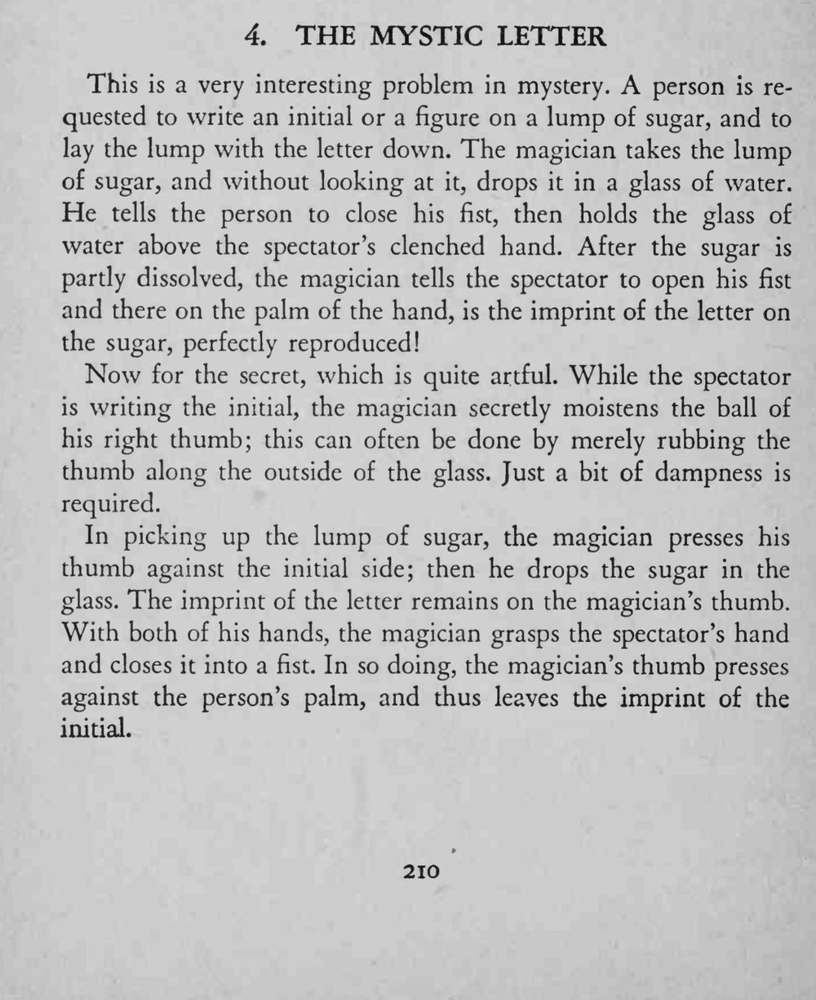

观众在方糖上写一个字母，糖被丢进水里，片刻后同一字母却清楚印在观众自己的掌心上。
拇指微湿即可印上字迹，握拳时用力要轻而准，别留下水痕。

This is a very interesting problem in mystery. A person is requested to write an initial or a figure on a lump of sugar, and to lay the lump with the letter down. The magician takes the lump of sugar, and without looking at it, drops it in a glass of water. He tells the person to close his fist, then holds the glass of water above the spectator's clenched hand. After the sugar is partly dissolved, the magician tells the spectator to open his fist and there on the palm of the hand, is the imprint of the letter on the sugar, perfectly reproduced! Now for the secret, which is quite artful. While the spectator is writing the initial, the magician secretly moistens the ball of his right thumb; this can often be done by merely rubbing the thumb along the outside of the glass. Just a bit of dampness is required. In picking up the lump of sugar, the magician presses his thumb against the initial side; then he drops the sugar in the glass. The imprint of the letter remains on the magician's thumb. With both of his hands, the magician grasps the spectator's hand and closes it into a fist. In so doing, the magician's thumb presses against the person's palm, and thus leaves the imprint of the initial.